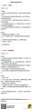
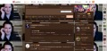
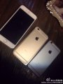
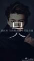

![[失望]](sw_org.gif "[失望]")

-
Sina菁英校园
 ：#微博校园渠道经理招募#你，专注新媒体品牌推广；你，长于商业策划和项目执行；你，关注数据和结果；你，你具备高度的责任感与敬业精神。
：#微博校园渠道经理招募#你，专注新媒体品牌推广；你，长于商业策划和项目执行；你，关注数据和结果；你，你具备高度的责任感与敬业精神。![[笑哈哈]](lxhwahaha_org.gif "[笑哈哈]") 那么，也许这就是你一直在等的机会！微博校园【渠道经理】职位招募！
那么，也许这就是你一直在等的机会！微博校园【渠道经理】职位招募！![[心]](hearta_org.gif "[心]") 心动就别错过，赶快发送简历到dinglu@staff.sina.com.cn吧！
心动就别错过，赶快发送简历到dinglu@staff.sina.com.cn吧！
- 
-
陈翔橙四川歌迷会 ：【演唱会邮寄票根通知】:请在后援买了演唱会门票需要后援邮寄的把【邮寄地址，姓名，电话，邮编】发至四川后援邮箱【chenxiangschyh@sina.com】邮费为到付。邮寄票根地址统计截止日期为:10.26晚8点。之前发过地址的也请重新发送一次。
-
新浪新闻
：#新闻晚播报#梁振英:勿试探北京忍耐底线||中澳联手追逃确定首批贪官名单||江苏两地团委书记偷情 女方被曝另与镇书记开房 http://t.cn/R7tNfhh 更多热点新闻请关注手机新浪网(sina.cn) 新浪新闻客户端iPhone下载:http://t.cn/z8emPQX
-
MichaelOwen
：When I get back early next week I will organise some kind of competition because I have 5 signed copies of the Shanghai School Football League event booklet to give away to people here on Sina Weibo.
-
TChengZ
：太恶心了，谁在抢钱谁知道『控诉厦门市政府保障房一夜暴涨60%』http://t.cn/R7c4c8n|share-sina-weibo
-
敏兒大愛RM ：难以超越『六小龄童版西游记为何难以超越？』http://t.cn/Rh6I2vn|share-sina-weibo
赞| 转发| 收藏| 评论 10月21日 23:48 来自三星Galaxy Note II
Sina Vodjani 百度百科
Sina Vodjani1954年出生于伊朗德黑兰，母亲是法国人，Sina天生就是连接东方和西方文化的大使，他离开伊朗后来到德国，在这里他学习了声乐以及吉他和钢琴等，而随后的旧金山...
sina.com.cn 新浪网
第五次策略sina 新浪微博
Sina人像摄影：大气唯美般的诗意童话 新浪微博
-
Young大大是外星人
：sina weibo网页版更新了挺好看的，喜欢这种透透明的感觉![[呵呵]](smilea_org.gif "[呵呵]")
- 
![[偷笑]](heia_org.gif "[偷笑]")
-
sina青岛时尚
：#网友求助#你们都换苹果6了！现诚心求苹果5S，价格800元左右，不求全新，至少98成新！800最多了，必须送手机套，贴金刚膜，，为了怕被骗，请签订正规交易合同，并公证！试用期3个月，满意付款！@青岛交通广播FM897 @sina青岛美食
- 
-
TMAtakemeaway
：和sina分开了这么多天，感慨还是特好，只有在这里我才可以把我想说的说出来，毕竟可以让不想知道的人知道，也算是畅所欲言了吧。
-
策划人阿偶
：朋友说他刚从“新马泰”回来，感冒了！我说那边很冷吗？他说，嗯，风呼呼的，变天了，，特别是泰山路，哈馄饨都暖和不过来！![[偷乐]](lxhtouxiao_org.gif "[偷乐]") “新业广场”“河马石”“泰山路”，，新马泰一日游，，@sina青岛时尚
“新业广场”“河马石”“泰山路”，，新马泰一日游，，@sina青岛时尚
-
Purgarer丶
：this just is a sample for use mac notification center to post a sina microblog
-
___Jessica_L ：
Dear SEHUN！Welcome to sina microblog！I hope you will be happy every day！![[爱你]](lovea_org.gif "[爱你]") @世勋勋-EXO
@世勋勋-EXO
- 
-
青岛印象QUCG
：#人文印象# 青岛画家窦世强中央美院访学版画汇报展——《界线》，10月19日—10月31日在市南区安徽路嘉木美术馆展出。“回头看看自己走的艺术道路，是由许许多多的界限组成的；每一个界限，代表着一种新的理解，以及新的追求。”@畅行952 @sina青岛时尚 @燕岛秋潮YD
-
没有特殊字符的微博 ：#zhouyong33@sina.com#老师你好，请问之前护理考研一般都去那几个学校？还有考青大的那个师姐的联系方式，谢咯…
![[加油啊]](lxhjiayou_org.gif "[加油啊]")
-
大头陀
：新浪财经，作者：SINA Corporation (Nasdaq: SINA) 这一版不俗，可视化的涨跌预测我点个赞！@邓庆旭 http://t.cn/z8xZn2R
-
A太阳雨A
：今日收到捐款100元。截至10月21日21:00，渤海公益基金募款总计21638.47元，累计捐款总计10304.00元，账户余额11334.47元。 定向捐助公益账户:【支付宝：bohaigongyijijin@sina.com】@渤海论坛官博
-
天空仰望 ：吐槽：恶心的sina新版风格！
![[鄙视]](bs2_org.gif "[鄙视]")
赞| 转发| 收藏| 评论 10月21日 21:05 来自微博 weibo.com
-
Sehunism ：回复@MeltedCheeseFantasy:im commenting him again now until sina blocks me again. yeah, lovely comments. sehun's my favorite celeb, of course i will comment him unstop as long as im available.
- ◆◆
-
@MeltedCheeseFantasy ：Let's welcome Sehun and write good and lovely comments to sehun please!
 we can say 사랑해 or 세훈아 니가 최고야 (Sehun, you are the best) we can send him love in sweet words he's our best idol and only member we support with our all love! #오세훈사랑해#
we can say 사랑해 or 세훈아 니가 최고야 (Sehun, you are the best) we can send him love in sweet words he's our best idol and only member we support with our all love! #오세훈사랑해#
- 转发(31)|评论(14) 10月21日 20:30 来自Android客户端
赞| 转发| 收藏| 评论 10月21日 20:52 来自微博 weibo.com
![[困]](sleepya_org.gif "[困]")